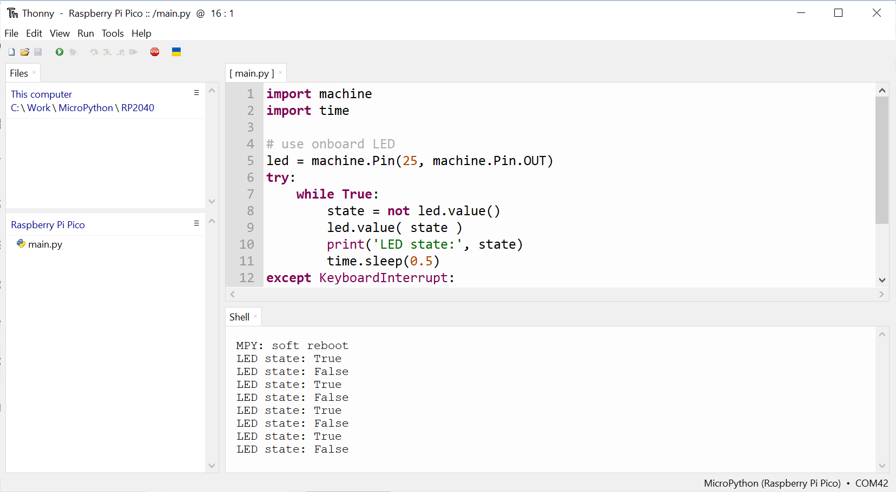

การเขียนโปรแกรม MicroPython สำหรับบอร์ด Raspberry Pi Pico / Pico-W#
Keywords: Python 3, MicroPython, Raspberry Pico, RP2040, Thonny IDE, WokWi Simulator
▷ ไมไครไพธอนสำหรับบอร์ด Raspberry Pi Pico#
บอร์ดไมโครคอนโทรลเลอร์ Raspberry Pi (RPi) - Pico (RP2040) ซึ่งได้มีการเปิดตัวไปในช่วงต้นปีค.ศ. 2020 สามารถนำมาใช้และเขียนโปรแกรมได้หลายภาษา เช่น C/C++ และ Python - MicroPython / CircuitPython ก็เป็นภาษาคอมพิวเตอร์หนึ่งซึ่งเหมาะสำหรับผู้ใช้เริ่มต้น
รูป: บอร์ดไมโครคอนโทรลเลอร์ Raspberry Pi Pico Boards: Pico / Pico-H / Pico-W / Pico-WH
รูป: แผนผัง Pinout Diagram หรือ Pin Map ของบอร์ด Pico
รูป: การมองเห็นไดร์ฟ (ชื่อ RPI-RP2) ของบอร์ด Pico เมื่อชิป RP2040
ทำงานในโหมด UF2 Bootloader และเชื่อมต่อทางพอร์ต USB กับเครื่องคอมพิวเตอร์ผู้ใช้ Windows
ผู้พัฒนาไมโครไพธอน (Damien George) ได้นำซอร์สโค้ดของไมโครไพธอน มาปรับใช้กับชิป RP2040 และบอร์ด Pico โดยตั้งชื่อว่า "rp2" (เริ่มต้นที่เวอร์ชัน v1.13 และขณะที่เขียนบทความนี้ ได้พัฒนามาถึงเวอร์ชัน v1.19)
การติดตั้งเฟิร์มแวร์สำหรับไมโครไพธอนไปยังบอร์ด Pico ก็ทำได้ไม่ยาก มีขั้นตอนดังนี้
วิธีที่ 1
- ดาวน์โหลดไฟล์เฟิร์มแวร์สำหรับบอร์ด Pico ซึ่งจะเป็นไฟล์ที่มีชื่อลงท้ายด้วย .uf2 มายังเครื่องผู้ใช้ (สามารถเลือกไฟล์ล่าสุดได้จาก https://micropython.org/download/rp2-pico/)
- กดปุ่ม BOOTSEL บนบอร์ด Pico ค้างไว้ จากนั้นเสียบสาย MicroUSB เชื่อมต่อกับคอมพิวเตอร์ของผู้ใช้ แล้วปล่อยปุ่ม BOOTSEL
- จากนั้นจะมองเห็น USB Drive (ชื่อ
RPI-RP2) ในคอมพิวเตอร์ผู้ใช้ และให้คลิกและลากไฟล์ .uf2 ไปใส่ลงในไดรฟ์ดังกล่าว รอให้บอร์ด Pico รีเซตการทำงานใหม่อีกครั้ง
รูป: หน้าเว็บไซต์สำหรับดาวน์โหลดไฟล์ MicroPython - Pico Firmware ซึ่งมีรายการไฟล์ .uf2 ให้เลือกดาวน์โหลด
รูป: หน้าเว็บไซต์สำหรับดาวน์โหลดไฟล์ MicroPython - Pico-W Firmware
วิธีที่ 2
- ดาวน์โหลดและติดตั้งโปรแกรม Thonny IDE
- เลือก Python Interpreter เป็น MicroPython แล้วเชื่อมต่อบอร์ด Pico (อยู่ในโหมด UF2 Boot) กับคอมพิวเตอร์กับผู้ใช้ และอัปโหลดเฟิร์มแวร์ของไมโครไพธอนไปยังบอร์ดได้
เมื่อได้ติดตั้งไฟล์ไมโครไพธอนไปยังบอร์ด Pico แล้วก็สามารถใช้โปรแกรมอย่างเช่น Thonny IDE เชื่อมต่อกับบอร์ด Pico และเริ่มต้นการเขียนโปรแกรมไมโครไพธอน
Thonny IDE
- เป็นซอฟต์แวร์ประเภท Python Editor / IDE และรองรับการเขียนโค้ดด้วยภาษา MicroPython / CircuitPython
- เป็นซอฟต์แวร์ Open Source ที่ได้มีการพัฒนาขึ้นที่สถาบัน Institute of Computer Science มหาวิทยาลัย University of Tartu ประเทศเอสโตเนีย (Estonia) และมีบริษัท Cybernetica AS รับช่วงต่อในการพัฒนาและดูแล
- ใช้ภาษา Python ในการพัฒนา
- สามารถนำมาใช้ได้กับระบบ Windows, Linux และ macOS
ข้อสังเกต
- หากต้องการลองใช้ไมโครไพธอนสำหรับบอร์ด Pico แต่ยังไม่มีอุปกรณ์ ก็สามารถลองเขียนโค้ดและจำลองการทำงานได้เสมือนจริงในเบื้องต้น โดยใช้ Wokwi Simulator และเลือกอุปกรณ์เป็น "MicroPython on Raspberry Pico"
- ในปัจจุบันมีบอร์ดไมโครคอนโทรลเลอร์ที่ใช้ชิป RP2040 เหมือนบอร์ด Pico และสามารถเลือกมาใช้ เป็นตัวเลือกอื่นแทนที่ Pico ได้ ผู้ผลิตบอร์ดที่ใช้ RP2040 ก็อาจมีการเลือกใช้ชิป QSPI Flash ภายนอกที่มีความจุมากกว่า 2MB ให้เลือกใช้ได้ เช่น 4MB / 8MB / 16MB ตัวอย่างบอร์ด ได้แก่ WeAct Studio RP2040 และ VCC-GND Studio YD-RP2040
- ไฟล์เฟิร์มแวร์สำหรับบอร์ด Pico (ไม่มี WiFi/BLE ) และ Pico-W (มีโมดูล WiFi/BLE ) ได้มีการจัดทำแยกกัน ดังนั้นจึงจะต้องดาวน์โหลดไฟล์ที่ถูกต้องและตรงกับบอร์ดที่จะเลือกใช้งาน
ตัวอย่างการใช้งาน Thonny IDE (v4.0.x) สำหรับระบบปฏิบัติการ Windows มีดังนี้
รูป: เปิดใช้งาน Thonny IDE และเลือก Run > Select / Configure Interpreter...
รูป: เลือก MicroPython (Raspberry Pi Pico)
ถ้าต้องการติดตั้งไฟล์เฟิร์มแวร์ไปยังบอร์ด Pico (ในโหมด UF2 Boot) ให้เชื่อมต่อบอร์ดกับคอมพิวเตอร์ผู้ใช้ผ่านทางพอร์ต USB แล้วคลิก "Install or update firmware" เลือก "Target volume" ซึ่งเป็น USB Flash Drive ของบอร์ด และเลือก "MicroPython variant" เช่น จะใช้กับบอร์ด Pico หรือ Pico-W เป็นต้น
รูป: ขั้นตอนการติดตั้ง MicroPython Firmware โดยใช้ Thonny IDE
รูป: การเลือกไฟล์และติดตั้งเฟิร์มแวร์สำหรับบอร์ด Pico-W
รูป: ข้อความใน Shell แสดงให้เห็นว่า สามารถเชื่อมต่อกับบอร์ด Pico ที่ได้ติดตั้งเฟิร์มแวร์ของไมโครไพธอน (MicroPython v1.9.1) และพร้อมใช้งานแล้ว
ผู้ใช้สามารถพิมพ์คำสั่งของไมโครไพธอน ในช่องอินพุตของ Shell ถัดจากสัญลักษณ์ >>> ( Interactive MicroPython REPL Prompt)
แล้วกดคีย์ Enter
ถ้าต้องการรีเซตข้อมูลในหน่วยความจำแฟลช (Resetting Flash memory) ของบอร์ด Pico
ให้ดาวน์โหลดไฟล์ที่มีชื่อว่า flash_nuke.uf2
แล้วนำไปใช้กับบอร์ด Pico
▷ โค้ดตัวอย่าง: Onboard LED Blink#
โค้ดไมโครไพธอนต่อไปนี้ สาธิตการใช้คำสั่งเพื่อทำให้ LED บนบอร์ด Pico ซึ่งตรงกับขา GP25 กระพริบด้วยอัตราคงที่
import machine
import time
# Use the onboard LED (GP25 pin on the Pico board)
led = machine.Pin( 25, machine.Pin.OUT )
try:
while True:
state = not led.value()
led.value( state )
print( 'LED state:', state )
time.sleep(0.5)
except KeyboardInterrupt:
pass
finally:
led.value(0) # Turn off LED
ให้ลองเขียนโค้ดใน Thonny IDE แล้วกดปุ่ม Save As เลือกชื่อไฟล์ main.py
แล้วบันทึกไปยังระบบไฟล์ของบอร์ด Pico
รูป: การเขียนโค้ดโดยใช้ Thonny IDE และบันทึกไฟล์ main.py ไว้ในหน่วยความจำของบอร์ด Pico

รูป: การทำงานของโค้ดไมโครไพธอนในไฟล์ main.py ที่ได้มีการบันทึกไฟล์ไปยังบอร์ด Raspberry Pi Pico
การอ้างอิงชื่อของ Onboard LED ทำได้โดยการระบุหมายเลข GPIO
ถ้าเป็นบอร์ด Pico ก็จะใช้หมายเลข GP25 (25) แต่ถ้าเป็นบอร์ด Pico-W
จะไม่สามารถใช้งานขาดังกล่าว แต่ให้เขียนคำสั่งตามรูปแบบต่อไปนี้ ใช้ชื่อขา 'LED' หรือ 'WL_GPIO0'
led = machine.Pin( 'LED', machine.Pin.OUT )
ทุกครั้งที่มีการรีเซตการทำงานของไมโครไพธอน (เช่น กดคีย์ Ctrl+ D เมื่อใช้งาน Thonny IDE)
จะมีการทำคำสั่งต่าง ๆ ในไฟล์ main.py โดยอัตโนมัติ (ถ้ามีการสร้างไฟล์ชื่อดังกล่าวเอาไว้)
ถ้าต้องการหยุดการทำงานของโปรแกรม main.py หากยังไม่หยุดการทำงาน
ก็ให้กดคีย์ Ctrl+C (เพื่อหยุดการคำสั่งของ main.py)
หรือ กดปุ่ม Stop / Restart backend
(เพื่อหยุดการทำคำสั่งของ main.py และเริ่มการทำงานของ MicroPython REPL ใหม่อีกครั้ง)
แต่ถ้ากดคีย์ Ctrl+D เป็นการทำคำสั่ง Soft Reset และทำให้บอร์ดเริ่มต้นทำงานใหม่
▷ การเขียนโค้ดและจำลองการทำงานด้วย Wokwi Simulator#
Raspberry Pi Pico Emulator ที่เป็นส่วนหนึ่งของ Wokwi Simulator เป็นอีกหนึ่งตัวเลือกสำหรับการฝึกเขียนโค้ด C/C++ และ MicroPython / CircuitPython และรองรับการใช้งานบอร์ดไมโครคอนโทรลเลอร์ Pico ให้ลองเปิดเว็บเบราว์เซอร์ไปยัง https://wokwi.com/dashboard/projects แล้วกดคลิกที่ "+NEW PROJECT" แล้วเลือกบอร์ดจากรายการ "MicroPython on Raspberry Pico"
จากนั้นลองเขียนโค้ดไมโครไพธอนตามตัวอย่าง แล้วกดปุ่ม "Start the simulation" เพื่อทดสอบการทำงานของโค้ด
รูป: การเขียนโค้ดไมโครไพธอนและจำลองการทำงานด้วย Wokwi Simulator
▷ โค้ดตัวอย่าง: การระบุเวอร์ชันของไมโครไพธอนและกำหนดความถี่ของซีพียู#
ตัวอย่างถัดไปสาธิตการทำคำสั่งเพื่อแสดงข้อมูลเกี่ยวกับเฟิร์มแวร์ไมโครไพธอนที่ได้มีการติดตั้งใช้งาน
โดยใช้คำสั่ง os.uname()
การอ่านและตั้งค่าความถี่สำหรับซีพียู โดยใช้คำสั่ง machine.freq(...)
และการแสดงข้อมูลเกี่ยวกับความจุและการใช้งานระบบไฟล์ที่ใช้หน่วยความจำแฟลชบนบอร์ด Pico
โดยใช้คำสั่ง os.statvfs(...)
import machine
import sys
import time
import os
# Show Micropython information
print( "sys.version: {}".format(sys.version) )
results = os.uname()
print( 'machine: {}'.format( results.machine) )
print( "release: {}".format( results.release) )
# Delay for 0.5 seconds
time.sleep_ms(500)
# Read the default CPU frequency
default_freq = machine.freq()
# Set the CPU frequency to a lower value (say 64MHz)
machine.freq( 64000000 )
# Read the current CPU frequency
print ( "CPU freq. = %d MHz" % int(machine.freq()/1e6) )
# Restore the default CPU frequency
machine.freq( default_freq )
# Read the current CPU frequency (125 MHz)
print ( "CPU freq. = %d MHz" % int(machine.freq()/1e6) )
# Get information about VFS (Virtual File Storage)
vfs_info = os.statvfs('/')
# vfs_info[0] = block size in bytes
# vfs_info[2] = total number of blocks in the Flash filesystem
# vfs_info[3] = total number of free blocks
total_storage = vfs_info[0]*vfs_info[2]
free_storage = vfs_info[0]*vfs_info[3]
print( "Total storage: {} KB".format(total_storage//1024))
print( "Free storage: {} KB".format(free_storage//1024))
print( "Used storage: {} KB".format((total_storage - free_storage)//1024))
ตัวอย่างข้อความเอาต์พุต
sys.version: 3.4.0; MicroPython v1.19.1-995-g0a3600a9a on 2023-03-31
machine: Raspberry Pi Pico W with RP2040
release: 1.19.1
CPU freq. = 64 MHz
CPU freq. = 125 MHz
Total storage: 848 KB
Free storage: 836 KB
Used storage: 12 KB
▷ โค้ดตัวอย่าง: การจัดการหน่วยความจำ SRAM สำหรับ Heap#
ตัวอย่างนี้สาธิตการทำคำสั่งเพื่อตรวจสอบการใช้งานหน่วยความจำ On-chip SRAM
สำหรับ Heap และการใช้งาน Runtime Garbage Collection (GC)
โดยใช้คำสั่งของโมดูล gc เพื่อจัดการคืนหน่วยความจำที่่ไม่ได้ใช้งานสำหรับอ็อปเจกต์ใด ๆ แล้ว ในขณะที่โปรแกรมไมโครไพธอนทำงาน
import machine
import gc # for MicorPython's runtime garbage collection
# Show information about allocated and free memory
print( "Allocated Memory: %d bytes" % gc.mem_alloc() )
print( "Free: %d bytes" % gc.mem_free() )
# Invoke the garbage collection
print( "Invoked garbage collection" )
gc.collect()
# Show information about allocated and free memory
print( "Allocated Memory: %d bytes" % gc.mem_alloc() )
print( "Free: %d bytes" % gc.mem_free() )
mem_free = gc.mem_free()
mem_alloc = gc.mem_alloc()
mem_total = mem_free + mem_alloc
text_fmt = 'Memory (total/alloc/free): {:,} / {:,} / {:,} bytes'
print( text_fmt.format(mem_total, mem_alloc, mem_free) )
# Enable automatic garbage collection
gc.enable()
# If the GC threshold level is not set.
if gc.threshold() == -1:
# Set the threshold level. This will invoke the GC
# if more than 25% of the currently free heap becomes occupied.
level = gc.mem_free()//4 + gc.mem_alloc()
gc.threshold( level )
ตัวอย่างข้อความเอาต์พุตมีดังนี้
Allocated Memory: 5264 bytes
Free: 187136 bytes
Invoked garbage collection
Allocated Memory: 4784 bytes
Free: 187616 bytes
Memory (total/alloc/free): 192,448 / 4,880 / 187,568 bytes
▷ โค้ดตัวอย่าง: การอ่านอุณหภูมิภายในชิป RP2040 และวัดแรงดัน VBUS#
วงจร ADC (Analog-to-Digital Converter) ภายในชิป RP2040 มีช่องอินพุตทั้งหมด 5 ช่อง (ช่องหมายเลข 0 ถึง 4) และมีความละเอียดในการแปลงข้อมูลเท่ากับ 12 บิต (0..4095) แต่การอ่านค่าด้วยไมโครไพธอน จะแปลงให้เป็นข้อมูลขนาด 16 บิต (มีค่าอยู่ในช่วง 0..65535)
ในกรณีที่ใช้บอร์ด Raspberry Pi Pico ช่องอินพุตหมายเลข 0, 1, 2 ของ ADC ตรงกับขา GP26, GP27 และ GP28 บนบอร์ดตามลำดับ ในขณะที่ช่องอินพุตหมายเลข 3 จะใช้สำหรับอ่านแรงดันไฟฟ้าที่ขา GP29 ซึ่งจะวัดค่า VSYS/3 (แต่ถ้าบอร์ดใช้แรงดันไฟเลี้ยงจาก VUSB จะได้เท่ากับ VBUS/3)
โค้ดตัวอย่างนี้สาธิตการอ่านค่าอินพุตด้วยวงจร ADC จากขา GP29 ของบอร์ด Pico เพื่อวัดแรงดันไฟเลี้ยง VBUS และช่องอินพุตที่ 4 สำหรับวัดอุณหภูมิภายในชิป RP2040
from machine import Pin, ADC
import time
conversion_factor = (3.3 / 65535) # 3.3V <-> 16-bit value
# Read analog input on GP29 of the Pico board
voltage = ADC( 29 ).read_u16() * conversion_factor * 3
print('VBUS: %.3f V' % voltage)
# Read the on-chip temperature sensor
sensor_temp = ADC(4)
while True:
reading = sensor_temp.read_u16() * conversion_factor
# Typical value: 0.706V at 27 degrees C
# with a slope of -1.721mV (0.001721) per degree.
temperature = 27 - (reading - 0.706)/0.001721
print('On-chip temperature: {:.2f} deg.C'.format(temperature) )
time.sleep(2.0)
ตัวอย่างข้อความเอาต์พุต (เมื่อทดลองกับอุปกรณ์จริงโดยใช้บอร์ด Pico)
VBUS: 5.036 V
On-chip temperature: 31.26 deg.C
On-chip temperature: 30.32 deg.C
On-chip temperature: 30.32 deg.C
On-chip temperature: 30.79 deg.C
...
แต่ถ้าใช้บอร์ด Pico-W จะต้องใช้โค้ดตัวอย่างต่อไปนี้ เนื่องจากมีความแตกต่างในระดับฮาร์ดแวร์ มีการใช้ขา GPIO บางขาของ RP2040 สำหรับเชื่อมต่อกับโมดูล WiFi/BLE
from machine import Pin, ADC
import time
import sys
conversion_factor = (3.3 / 65535) # 3.3V <-> 16-bit value
#---------------------------------------------------------------------
# On Pico-W board, the GPIO25 pin is used for WiFi module's SPI CS pin.
# When GPIO25 is high, it enables GPIO29 ADC pin to read VSYS.
wl_cs = Pin(25)
# Show WL_CS pin state
print( "WL_CS (GPIO25), state: {}".format(wl_cs) )
# Use GPIO25 as digital output and output HIGH.
wl_cs.init( mode=Pin.OUT, value=1 )
# Show WL_CS pin state
print( "WL_CS (GPIO25), state: {}".format(wl_cs) )
# Read analog input on GP29 of the Pico-W board
voltage = ADC( 29 ).read_u16() * conversion_factor * 3
print('VBUS: %.3f V' % voltage)
# Restore WL_CS pin state
wl_cs.init( mode=Pin.ALT, pull=Pin.PULL_DOWN, alt=7 )
print( "WL_CS (GPIO25), state: {}".format(wl_cs) )
#---------------------------------------------------------------------
# Read the on-chip temperature sensor
sensor_temp = ADC(4)
while True:
reading = sensor_temp.read_u16() * conversion_factor
# Typical value: 0.706V at 27 degrees C
# with a slope of -1.721mV (0.001721) per degree.
temperature = 27 - (reading - 0.706)/0.001721
print('On-chip tempreature: {:.2f} deg.C'.format(temperature) )
time.sleep(2.0)
▷ โค้ดตัวอย่าง: การเขียนอ่านไฟล์ข้อมูลภายใน Flash Storage#
โค้ดต่อไปนี้สาธิตการใช้โครงสร้างข้อมูลแบบ Dictionary ในภาษาไมโครไพธอน แล้วนำไปเขียนข้อมูลเก็บไว้ในไฟล์ หรืออ่านข้อมูลมาจากไฟล์ แบ่งเป็นสองวิธี
- วิธีแรกเป็นการเขียนข้อมูลเป็นไฟล์แบบ Text-based แบ่งข้อมูลในบรรทัดเดียวกันด้วยเครื่องหมาย
,(Comma) - วิธีที่สองเป็นการเขียนข้อมูลในรูปแบบ JSON String
(โดยใช้คำสั่งของไลบรารี
ujson)
import os
import time
import ujson
#-------------------------------------------------------------
# Save a dictionary to a text file
def save_data_to_file(fname, dict_data):
with open(fname, "w") as f:
for key in dict_data:
f.write("{},{}\n".format(key, dict_data[key]))
def load_data_from_file(fname):
dict_data = {}
with open(fname, "r") as f:
for s in f:
name_value = s.strip().split(",")
dict_data[name_value[0]] = name_value[1]
return dict_data
#-------------------------------------------------------------
# Save a dictonary to a JSON file
def save_json_to_data(fname, data):
with open(fname, "w") as f:
s = ujson.dumps(data) # Convert to JSON string
f.write(s) # Write JSON string to file
def load_json_from_file(fname):
data = {}
with open(fname, "r") as f:
s = f.read() # Read JSON string from file
data = ujson.loads(s) # Convert JSON string to dict
return data
#-------------------------------------------------------------
# Create a dictionary with sample key-value pairs
data = {}
data["TH"] = "Thailand"
data["DE"] = "Germany"
data["JP"] = "Japan"
data["AU"] = "Australia"
DATA_FILENAME = "/data.txt"
JSON_FILENAME = "/data.json"
print('Write data to a text file (comma-sperated).')
# Save the dictionary to a text file
save_data_to_file( DATA_FILENAME, data )
# Load data from the text file
data = load_data_from_file( DATA_FILENAME )
# Show loaded data (key-value pairs)
for k, v in data.items():
# Show the key and the associated value
print( "\t %s = %s" % (k,v) )
print('Write data to a JSON file.')
# Save the dictionary to a JSON file
save_json_to_data( JSON_FILENAME, data )
# Load data from the JSON file
data = load_json_from_file( JSON_FILENAME )
# Show loaded data (key-value pairs)
for k, v in data.items():
# Show the key and the associated value
print( "\t %s = %s" % (k,v) )
# List files
print( "Files:", os.listdir('/') )
# Remove files
os.remove( DATA_FILENAME )
os.remove( JSON_FILENAME )
# List files after file removal
print( "Files:", os.listdir('/') )
ตัวอย่างข้อความเอาต์พุต
Write data to a text file (comma-sperated).
DE = Germany
TH = Thailand
AU = Australia
JP = Japan
Write data to a JSON file.
DE = Germany
TH = Thailand
AU = Australia
JP = Japan
Files: ['data.json', 'data.txt', 'main.py']
Files: ['main.py']
ตัวอย่างข้อมูลในไฟล์ /data.json
{"DE": "Germany", "TH": "Thailand", "AU": "Australia", "JP": "Japan"}
▷ การสร้างไฟล์เฟิร์มแวร์จากซอร์สโค้ดของไมโครไพธอน#
ถัดไปเป็นตัวอย่างและขั้นตอนการสร้างไฟล์เฟิร์มแวร์จากซอร์สโค้ดของไมโครไพธอน โดยดาวน์โหลดไฟล์มาจาก
Github Repository: github:micropython/micropython
และคอมไพล์โค้ดในเครื่องคอมพิวเตอร์ของผู้ใช้ที่เป็น Ubuntu (22.04 LTS)
หรือจะใช้ WSL2 - Ubuntu สำหรับ Windows ก็ได้เช่นกัน
คำสั่งสำหรับการติดตั้งโปรแกรมที่จำเป็นสำหรับ Ubuntu มีดังนี้
$ sudo apt update -y
$ sudo apt install -y python3 python3-dev git build-essential cmake
$ sudo apt install -y gcc-arm-none-eabi libnewlib-arm-none-eabi
คำสั่งสำหรับการดาวน์โหลดและคอมไพล์ซอร์สโค้ด เพื่อให้ได้ไฟล์ .uf2 มีดังนี้
# Download the sourcecode of MicroPython
$ git clone https://www.github.com/micropython/micropython
# Change working directory to './micropython'
$ cd micropython/
# Download or update submodules such as
# lib/pico-sdk, lib/tinyusb, 'lib/cyw43-driver', lib/mbedtls, ...
$ git submodule update --init --recursive
# Build the MicroPython cross-compiler
$ make -C mpy-cross
# Build MicroPython firmware for RP2040 Boards
$ cd ./ports/rp2
บอร์ด RP2040 ที่มีขนาดของหน่วยความจำแฟลชให้เลือกใช้ได้แตกต่างกัน เช่น 4MB, 8MB และ 16MB มีตัวอย่างได้แก่
ดังนั้นจึงต้องกำหนด Build Variant สำหรับไมโครไพธอนให้ถูกต้องตามบอร์ดไมโครคอนโทรลเลอร์ที่ได้เลือกใช้
รูป: บอร์ด WeAct Studio RP2040 (ซ้าย) และ VCC-GND Studio YD-RP2040 (ขวา)
ภายใต้ไดเรกทอรี /ports/rp2/boards
ของ MicroPython Repository จะเห็นได้ว่า มีรายการบอร์ด RP2040 เช่น
ADAFRUIT_FEATHER_RP2040ADAFRUIT_QTPY_RP2040ARDUINO_NANO_RP2040_CONNECTPICOPICO_WPIMORONI_PICOLIPO_16MBPIMORONI_PICOLIPO_4MBWEACTSTUDIO
ไฟล์ mpconfigboard.h ของแต่ละไดเรกทอรี มีการกำหนดค่าต่าง ๆ ที่เกี่ยวกับบอร์ด เช่น
MICROPY_HW_BOARD_NAMEระบุชื่อของบอร์ดMICROPY_HW_FLASH_STORAGE_BYTESกำหนดขนาดของระบบไฟล์แฟลชสำหรับไมโครไพธอน (หน่วยเป็นไบต์)
บอร์ด Pico W (2MB Flash) มีตัวอย่างการกำหนดค่าไว้ดังนี้
#define MICROPY_HW_BOARD_NAME "Raspberry Pi Pico W"
#define MICROPY_HW_FLASH_STORAGE_BYTES (848 * 1024)
แต่ถ้าเป็นบอร์ด Adafruit Feather RP2040 Pico (8MB Flash) มีการกำหนดค่าไว้ตามตัวอย่างดังนี้
#define MICROPY_HW_BOARD_NAME "Adafruit Feather RP2040"
#define MICROPY_HW_FLASH_STORAGE_BYTES (7 * 1024 * 1024)
ขั้นตอนถัดไปเป็นการทำคำสั่งเพื่อคอมไพล์โค้ดและสร้างไฟล์ .uf2 สำหรับบอร์ด WeAct Studio RP2040 ที่มีหน่วยความจำแฟลช 4MB (Winbond 25Q32JSVQ NOR flash)
# Remove build directory
$ rm -fr ./build-WEACTSTUDIO
# Build for WeAct Studio RP2040 Board (4MB)
$ make -j4 BOARD=WEACTSTUDIO BOARD_VARIANT=flash_4mb \
clean submodules all
แต่ถ้าจะนำไปใช้กับบอร์ดที่มีหน่วยความจำแฟลช 16MB (Winbond 25Q128JSVQ NOR flash) ให้ทำคำสั่งดังนี้
# Remove build directory
$ rm -fr ./build-WEACTSTUDIO
# Build for WeAct Studio RP2040 Board (16MB)
$ make -j4 BOARD=WEACTSTUDIO BOARD_VARIANT=flash_16mb \
clean submodules all
ไฟล์เฟิร์มแวร์ที่ได้คือ ./build-WEACTSTUDIO/firmware.uf2 ซึ่งสามารถนำไปติดตั้งใช้งานกับบอร์ด
RP2040 ของ WeAct Studio
รูป: ตัวอย่างการเขียนโค้ดไมโครไพธอนด้วย Thonny IDE และตรวจสอบขนาดของแฟลช (~16MB)
▷ แหล่งข้อมูลและเอกสารอ้างอิง#
- e-Book:
"Get Started with MicroPython on Raspberry Pi Pico (2021)",
ISBN: 978-1-912047-86-4 - ไฟล์เอกสาร .PDF แนะนำการใช้งาน MicroPython API / SDK:
https://datasheets.raspberrypi.org/pico/sdk/pico_python_sdk.pdf - ไฟล์โค้ดตัวอย่างสาธิตการทำงานไมโครไพธอนสำหรับ RP2040:
https://github.com/raspberrypi/pico-micropython-examples - MicroPython - Quick Reference for the RP2:
https://docs.micropython.org/en/latest/rp2/quickref.html
บทความที่เกี่ยวข้อง
- "แนวทางการใช้งานบอร์ด Raspberry Pi Pico สำหรับการเรียนรู้ระบบสมองกลฝังตัว"
- "การเขียนโปรแกรม MicroPython สำหรับบอร์ด Pico เพื่อทำให้ LED กระพริบด้วยวิธีที่แตกต่างกัน"
▷ กล่าวสรุป#
บทความนี้ได้นำเสนอขั้นตอนการติดตั้งและใช้งานไฟล์เฟิร์มแวร์ของ MicroPython สำหรับนำมาใช้กับบอร์ด Raspberry Pi Pico / Pico-W และใช้ซอฟต์แวร์ Thonny IDE เป็น Desktop IDE ในการเขียนและอัปโหลดโค้ดไปยังบอร์ด Pico / Pico-W หรือทดลองใช้ Wokwi Simulator เป็น Online IDE สำหรับการเขียนโค้ดและจำลองการทำงานในเบื้องต้น
This work is licensed under a Creative Commons Attribution-ShareAlike 4.0 International License.
Created: 2023-04-02 | Last Updated: 2023-04-05